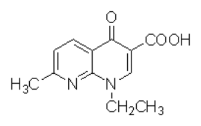
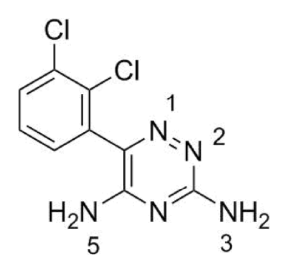
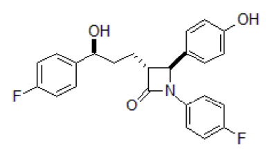
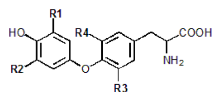
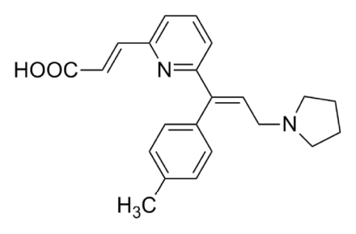

108 年第 1 次藥師藥理學與藥物化學試題與答案
這一頁是民國 108 年第 1 次藥師藥理學與藥物化學的整份歷屆試題，共 80 題，題目與標準答案出自考選部「國家考試試題及測驗式試題答案」開放資料。以下逐題列出題幹、選項與答案；要計時作答或記錄成績，請用線上練習。
考選部原始場次代碼：108030
線上作答這一科 →
全部 80 題
第 1 題
下列何者是直接作⽤在serine/threonine kinase receptor？
- （A）ANP
- （B）EGF
- （C）PDGF
- （D）TGF-beta
答案：（D）
第 2 題
Clonidine容易產⽣withdrawal hypertensive crisis，此作⽤的主要原因為何？
- （A）降低alpha2-adrenoceptor表現量
- （B）增加alpha1-adrenoceptor表現量
- （C）降低alpha2-adrenoceptor的intrinsic activity
- （D）增加alpha1-adrenoceptor的intrinsic activity
答案：（A）
第 3 題
為篩檢⼈體內代謝酵素CYP3A4之活性，選⽤下列何種藥物當作指標最適當？
- （A）caffeine
- （B）dextromethorphan
- （C）erythromycin
- （D）tolbutamide
答案：（C）
第 4 題
在肝炎治療藥物中，下列何者是經由抑制NS5B RNA聚合酶，並且為核苷／核苷酸類似物？
- （A）dasabuvir
- （B）daclatasvir
- （C）sofosbuvir
- （D）simeprevir
答案：（C）
第 5 題
下列敘述何者正確？
- （A）cefoxitin比起ceftazidime對格蘭⽒陰性菌更廣效
- （B）ceftazidime可有效治療綠膿桿菌
- （C）ceftazidime不會受到β-lactamase⽔解
- （D）ceftriaxone與ceftazidime在腎功能不佳的病⼈都需調整劑量使⽤
答案：（B）
第 6 題
下列何種藥物不是因為直接造成細胞DNA損傷⽽毒殺癌細胞？
- （A）methotrexate
- （B）doxorubicin
- （C）bleomycin
- （D）cisplatin
答案：（A）
第 7 題
有關抗腫瘤藥物cetuximab的敘述，下列何者錯誤？
- （A）是⼀種對抗EGFR的單株抗體⽤藥
- （B）適⽤於腫瘤基因RAS產⽣突變之病⼈
- （C）可與irinotecan併⽤於治療轉移性⼤腸直腸癌
- （D）可與放射線療法合併使⽤於治療局部性頭頸癌，但有極低比率（1%）可能造成病患猝死
答案：（B）
第 8 題
有關免疫檢查點抑制劑（immune checkpoint inhibitor），下列何者錯誤？
- （A）有針對腫瘤或免疫T細胞上受體作⽤之抑制劑
- （B）avelumab與pembrolizumab皆可阻斷PD-1與PD-L1的結合
- （C）比起傳統化療藥物例如alkylating agents副作⽤⼩
- （D）belimumab可有效的阻斷T細胞上CD2的活化
答案：（D）
第 9 題
下列何者可和黴菌細胞膜之麥⾓固醇（ergosterol）結合，造成細胞膜穿孔⽽達到殺菌作⽤？
- （A）amphotericin B
- （B）caspofungin
- （C）fluconazole
- （D）terbinafine
答案：（A）
第 10 題
免疫抑制劑cyclosporin A運⽤於器官移植，以防⽌排斥作⽤。下列敘述何者錯誤？
- （A）在T細胞內與cyclophilin結合成複合體，以抑制calcineurin作⽤
- （B）降低NF-AT轉錄因⼦之活性
- （C）增加IFN-γ之產⽣
- （D）可運⽤於⾃體免疫疾病（autoimmune disorders）
答案：（C）
第 11 題
下列藥物何者可結合抗凝⾎藥物rivaroxaban，以緩解其過度抗凝⾎反應，減低出⾎之副作⽤？
- （A）andexanet alfa
- （B）protamine sulfate
- （C）aminocaproic acid
- （D）cilostazol
答案：（A）
第 12 題
使⽤下列何種降⾎脂藥物最有可能使⾎中HDL顯著增加？
- （A）niacin
- （B）cholestyramine
- （C）rosuvastatin
- （D）ezetimibe
答案：（A）
第 13 題
陳先⽣腦下垂體⻑腺瘤（adenoma），且發現⾎中含⼤量之⽣⻑激素（growth hormone），經進⾏⼿術切除 腺瘤後，仍發現⾎中⽣⻑激素濃度過⾼，此時給與下列何種藥物應可降低⽣⻑激素過度分泌的問題？
- （A）atosiban
- （B）conivaptan
- （C）leuprolide
- （D）octreotide
答案：（D）
第 14 題
Methimazole可抑制下列何種機制，⽽達到抗甲狀腺功能亢進之作⽤？
- （A）5'-deiodinase
- （B）thyroid peroxidase
- （C）Na+/ I- symporter
- （D）5α-reductase
答案：（B）
第 15 題
下列選擇性雌性素受體調節劑（selective estrogen receptor modulator）與其主要臨床⽤途之配對，何者正 確？
- （A）bazedoxifene－治療乳癌
- （B）clomiphene－改善停經後症狀，例如：熱潮紅，失眠
- （C）raloxifene－預防停經後婦女骨質疏鬆
- （D）tamoxifen－促進卵巢排卵
答案：（C）
第 16 題
含氨基之雙磷酸鹽類藥物（amino bisphosphonates），例如alendronate，可以藉由抑制下列何種機制⽽降 低噬骨細胞（osteoclast）的活性？
- （A）farnesyl pyrophosphate synthase
- （B）HMG-CoA reductase
- （C）Ca2+-sensing receptor
- （D）ATP-dependent potassium channels
答案：（A）
第 17 題
針對抗利尿激素ADH受體拮抗藥物tolvaptan具有利尿作⽤，其主要作⽤在collecting tubule以⼲擾下列何種管 道（channel）？
- （A）aquaporin
- （B）Na+
- （C）K+
- （D）Cl-
答案：（A）
第 18 題
Liddle's syndrome為⼀種顯性遺傳疾病，促進腎臟對鈉離⼦回收及鉀離⼦釋出，下列何種利尿劑最適合緩解 此病症？
- （A）amiloride
- （B）spironolactone
- （C）furosemide
- （D）acetazolamide
答案：（A）
第 19 題
Eplerenone能降低⼼肌梗塞後輕中度⼼衰竭病⼈的死亡率，其作⽤機制為何？
- （A）selective plasminogen inhibitor
- （B）selective glycoprotein IIb/IIIa receptor blocker
- （C）selective androgen receptor blocker
- （D）selective mineralocorticoid receptor inhibitor
答案：（D）
第 20 題
有關強⼼配醣體⽑地黃之治療使⽤，下列何者正確？
- （A）可⽤於治療⼼衰竭或合併有Wolff-Parkinson-White syndrome和atrial fibrillation之病⼈
- （B）⽑地黃中毒時可先以flecainide抑制⼼律不整，再給digoxin immune fab
- （C）可⽤於治療⼼衰竭或⼼房顫動（atrial fibrillation）
- （D）治療⼼衰竭的安全有效治療劑量範圍很寬
答案：（C）
第 21 題
Ranolazine⽤於⼼絞痛治療的藥理機制為何？
- （A）block late component of calcium channel
- （B）block late component of sodium current
- （C）block funny current
- （D）block ryanodine calcium release channel
答案：（B）
第 22 題
⻑期服⽤β-blockers治療⾼⾎壓，病⼈若突然停藥，常⾒的戒斷症狀為何？
- （A）decreased intensity of angina
- （B）bradycardia
- （C）tachycardia
- （D）sexual dysfunction
答案：（C）
第 23 題
Fibrates可經由活化PPAR-α途徑增加三酸⽢油酯等的脂質分解，常⽤來治療⾼三酸⽢油酯⾎症 （hypertriglyceridemia），其副作⽤不包括下列何者？
- （A）myopathy
- （B）arrhythmias
- （C）hypoprothrombinemia
- （D）high blood levels of aminotransferases or alkaline phosphatase
答案：（C）
第 24 題
下列何種藥物可抑制正腎上腺素轉運體（norepinephrine transporter, NET），導致突觸間隙正腎上腺素濃度 顯著上升，進⽽提升⾃主神經系統反應？
- （A）cocaine
- （B）cannabinoid
- （C）reserpine
- （D）nicotine
答案：（A）
第 25 題
下列抗毒蕈鹼藥物（antimuscarinic drugs），何者具備顯著中樞神經系統毒蕈鹼拮抗劑反應？
- （A）benztropine
- （B）glycopyrrolate
- （C）propantheline
- （D）tiotropium
答案：（A）
第 26 題
下列有關腎上腺受體拮抗劑之敘述，何者錯誤？
- （A）propranolol可減少偏頭痛的頻率與程度
- （B）carvedilol可以緩解慢性⼼衰竭病患致死率
- （C）metoprolol可延⻑⼼肌梗塞病患存活率
- （D）isoproterenol可以緩解青光眼
答案：（D）
第 27 題
下列關於⾃主神經之敘述，何者錯誤？
- （A）活化眼睛虹膜輻射狀肌alpha受體，產⽣散瞳
- （B）活化眼睛虹膜環狀肌毒蕈鹼受體，產⽣縮瞳
- （C）活化眼睛睫狀上⽪細胞beta受體，減少眼房液產⽣，減少眼內壓
- （D）活化眼睛alpha2受體，減少眼房液⽣成，減少眼內壓
答案：（C）
第 28 題
下列何者是terbutaline治療氣喘時的主要副作⽤？
- （A）嗜睡
- （B）便秘
- （C）⼼跳加快
- （D）肌⾁顫抖
答案：（D）
第 29 題
下列何種藥物，⽤於治療⼤腸激躁症？
- （A）alosetron
- （B）domperidone
- （C）diphenoxylate
- （D）octreotide
本題送分，無標準答案
第 30 題
下列消化性潰瘍治療藥物，何者是結合到腸胃道潰瘍部位的蛋⽩質來保護受損黏膜？
- （A）omeprazole
- （B）antacids
- （C）cimetidine
- （D）sucralfate
答案：（D）
第 31 題
下列那⼀個⽌痛藥物是屬於fenamates類型？
- （A）meclofenamic acid
- （B）sulindac
- （C）ibuprofen
- （D）piroxicam
答案：（A）
第 32 題
有關methotrexate的敘述，下列何者正確？
- （A）對於癌症並無治療效⽤
- （B）半衰期為6～9天
- （C）主要作⽤在COX-2上
- （D）可⽤於類風濕性關節炎治療
答案：（D）
第 33 題
下列何種藥物最適⽤於預防非類固醇鎮痛抗發炎藥（NSAIDs）引起之消化性潰瘍？
- （A）alprostadil
- （B）bimatoprost
- （C）mifepristone
- （D）misoprostol
答案：（D）
第 34 題
鴉片類藥物產⽣的作⽤主要是因為活化mu, delta或kappa受體所致，下列那⼀項作⽤並不是因為活化mu受體 所導致？
- （A）⽌痛
- （B）鎮靜
- （C）呼吸抑制
- （D）⼼搏過速
答案：（D）
第 35 題
阿寬和同學慶祝⽣⽇喝酒到不省⼈事，產⽣所謂的“blackouts”，此時⾼濃度酒精的主要作⽤機制為何？
- （A）抑制GABAA受體
- （B）活化5-HT受體
- （C）抑制NMDA受體
- （D）活化NMDA受體
答案：（C）
第 36 題
下列關於melatonin之敘述，何者為正確？
- （A）ramelteon的作⽤機制只影響melatonin的MT1受體（receptor）
- （B）melatonin是由腦下垂體（pituitary gland）分泌
- （C）ramelteon常和fluvoxamine合⽤，⽤於治療憂鬱症
- （D）ramelteon的副作⽤為疲勞、頭暈和影響內分泌
答案：（D）
第 37 題
下列何者不是抗焦慮症常⽤之藥物？
- （A）diazepam
- （B）buspirone
- （C）chlordiazepoxide
- （D）flumazenil
答案：（D）
第 38 題
下列有關影響⿇醉誘導速率因素的敘述，何者錯誤？
- （A）增加⼼輸出量時，誘導速率會加速
- （B）⿇醉劑溶解度⾼時，誘導速率慢
- （C）肺泡換氣速率增加時，誘導速率會加速
- （D）提⾼氣體混合中吸入性⿇醉劑比例時，誘導速率會加速
答案：（A）
第 39 題
下列關於服⽤nortriptyline所產⽣之副作⽤，何者錯誤？
- （A）視覺模糊（blurred vision）
- （B）便秘
- （C）⾎壓升⾼
- （D）⼼律不整
答案：（C）
第 40 題
下列有關penicillamine的敘述，何者錯誤？
- （A）為⽔溶性penicillin derivative
- （B）治療鐵中毒
- （C）治療類風溼性關節炎
- （D）D-Penicillamine比L-Penicillamine毒性⼩
答案：（B）
第 41 題
下列何種藥物主要以acetylation的⽅式代謝？
- （A）indomethacin
- （B）lidocaine
- （C）acetaminophen
- （D）procainamide
答案：（D）
第 42 題
若消旋體（racemates）之其中⼀個鏡像異構物呈現最主要的藥理活性，該成分可稱為：
- （A）leader
- （B）eutomer
- （C）pharmacophore
- （D）ligand
答案：（B）
第 43 題待校
下列何者不是estradiol之氧化代謝物？
答案：（D）
第 44 題待校
下列何者為參與下圖化合物代謝的最主要酵素？
- （A）CYP3A4
- （B）CYP2D6
- （C）CYP2C9
- （D）CYP1A2
答案：（A）
第 45 題
下列那⼀個藥物的結構中含有lysine residue？
- （A）lisinopril
- （B）moexipril
- （C）perindopril
- （D）spirapril
答案：（A）
第 46 題待校
下列何者為nabumetone的活性代謝物？
答案：（A）
第 47 題
Silver sulfadiazine的結構含有下列那⼀種雜環？
- （A）isoxazole
- （B）pyridine
- （C）pyrimidine
- （D）pyridazine
答案：（C）
第 48 題
下圖藥物抑菌作⽤的標的為：

- （A）transamidase
- （B）dihydropteroate synthase
- （C）topoisomerase II
- （D）DNA gyrase
答案：（D）
第 49 題
下列何種抗⽣素可抑制細菌細胞壁的⽣合成？
- （A）spectinomycin
- （B）erythromycin
- （C）vancomycin
- （D）chloramphenicol
答案：（C）
第 50 題
下列何種酵素可催化purine nucleotides⽣合成？
- （A）hypoxanthine guanine phosphoribosyl transferase（HGPRT）
- （B）amidophosphoribosyl transferase
- （C）thymidylate synthetase
- （D）xanthine oxidase
答案：（B）
第 51 題
下列何者是zidovudine結構中的鹼基？
- （A）adenine
- （B）cytosine
- （C）guanine
- （D）thymine
答案：（D）
第 52 題
蛋⽩質⽣物製劑不具有下列何種特性？
- （A）chemical instability
- （B）genetic instability
- （C）photoinstability
- （D）physical instability
答案：（B）
第 53 題
O-Demethylation屬於下列何種代謝反應？
- （A）還原
- （B）醯化
- （C）⽔解
- （D）氧化
答案：（D）
第 54 題
反義（antisense）藥物fomivirsen是屬於何種oligodeoxynucleotide？
- （A）phosphodiester
- （B）phosphorothioate
- （C）methylphosphonate
- （D）phosphoramide
答案：（B）
第 55 題
下列有關EMLA（Eutectic Mixture of a Local Anesthetic）軟膏之敘述，何者錯誤？
- （A）含2.5% lidocaine及2.5% prilocaine
- （B）適⽤於表⽪
- （C）適⽤於黏膜
- （D）可能產⽣變性⾎紅蛋⽩⾎症（methemoglobinemia）之毒性
答案：（C）
第 56 題
下列有關bupivacaine之敘述，何者錯誤？
- （A）屬於消旋體（racemic mixture）
- （B）其S-(-)之異構物稱為levobupivacaine
- （C）levobupivacaine之⼼臟毒性⼤於bupivacaine
- （D）以注射⽅式投藥
答案：（C）
第 57 題
下列有關atropine與scopolamine之敘述，何者錯誤？
- （A）⼆者皆屬於tropane類⽣物鹼
- （B）tropane為piperidine與pyrrolidine形成之雙環結構
- （C）atropine即是(±)-hyoscyamine
- （D）scopolamine即是(±)-hyoscine
答案：（D）
第 58 題
下列⾎清胺（serotonin）受體中，何者屬於離⼦通道（ion channel）型？
- （A）5-HT1
- （B）5-HT2
- （C）5-HT3
- （D）5-HT4
答案：（C）
第 59 題
下列有關melatonin的敘述，何者正確？
- （A）具有⼀個chiral center，以L-tryptophan為⽣合成起始物
- （B）不具有chiral center，以L-tryptophan為⽣合成起始物
- （C）具有⼀個chiral center，以D-tryptophan為⽣合成起始物
- （D）不具有chiral center，以D-tryptophan為⽣合成起始物
答案：（B）
第 60 題
下列何者為下圖化合物進⾏glucuronidation代謝的最主要位置？

- （A）1
- （B）2
- （C）3
- （D）5
答案：（B）
第 61 題待校
下列何者是meperidine造成癲癇發作的代謝物？
答案：（B）
第 62 題
下列何者常⽤於鴉片成癮治療？
- （A）nalbuphine
- （B）buprenorphine
- （C）oxymorphone
- （D）levorphanol
答案：（B）
第 63 題待校
下列何者同時為κ agonist及μ antagonist？
答案：（D）
第 64 題
下列MAO-B抑制劑，何者具有propargylamine結構，⽤於治療Parkinson disease？
- （A）rasagiline
- （B）phenelzine
- （C）tranylcypromine
- （D）safinamide
答案：（A）
第 65 題
下列肌⾁鬆弛劑中，何者屬於glycerol monoether衍⽣物？
- （A）meprobamate
- （B）cyclobenzaprine
- （C）orphenadrine
- （D）mephenesin
答案：（D）
第 66 題
下列中樞降⾎壓劑中，何者可選擇性結合I1受體，對α2受體結合⼒低，不會產⽣鎮靜作⽤？
- （A）agmatine
- （B）clonidine
- （C）guanfacine
- （D）moxonidine
答案：（D）
第 67 題
Sodium nitroprusside須避光保存，有活性的溶液應為下列何種顏⾊？
- （A）紅棕⾊
- （B）黃⾊
- （C）綠⾊
- （D）藍⾊
答案：（A）
第 68 題
有關digoxin和digitoxin的比較，下列何者錯誤？
- （A）digoxin比digitoxin多了C12-OH，所以極性較⼤
- （B）digoxin與⾎清蛋⽩的結合⼒比digitoxin低
- （C）digoxin不被肝臟代謝，⽽digitoxin經肝臟代謝
- （D）digoxin的⼝服劑量是digitoxin的⼆倍
答案：（D）
第 69 題
下圖化合物降⾎脂作⽤，主要是由何⽽來？

- （A）減少膽固醇在腸道之吸收
- （B）使LDL不易被氧化
- （C）抑制HMG-CoA reductase
- （D）促進膽酸（bile acid）之排泄
答案：（A）
第 70 題
下列有關利尿劑triamterene與amiloride的敘述，何者錯誤？
- （A）triamterene具有pteridine環
- （B）amiloride具有aminopyrazine環
- （C）triamterene代謝物4'-hydroxytriamterene仍具利尿活性
- （D）triamterene的鹼性比amiloride強
答案：（D）
第 71 題
下列有關pioglitazone之敘述，何者錯誤？
- （A）結構屬於thiazolidinediones
- （B）屬於PPARγ agonists
- （C）其作⽤為增加細胞對insulin的敏感度
- （D）主要以原型態排出體外
答案：（D）
第 72 題
下圖為甲狀腺素共同結構式，何者為L-thyroxine？

- （A）R1 = R2 = R3 = R4 = I
- （B）R1 = R2 = R3 = I; R4 = H
- （C）R1 = H; R2 = R3 = R4 = I
- （D）R1 = R3 = I; R2 = R4 = H
答案：（A）
第 73 題
Prednisolone的抗發炎活性約為hydrocortisone之四倍，⽽其鈉離⼦滯留則較低，主要是由於prednisolone：
- （A）在C-1和C-2間導入C=C雙鍵
- （B）在C-6和C-7間導入C=C雙鍵
- （C）在C-11位置以ketone取代hydrocortisone的hydroxy group
- （D）在6α導入methyl取代基
答案：（A）
第 74 題
下列有關類固醇型雄性激素（steroidal androgen）的結構與活性關係之敘述，何者錯誤？
- （A）第3位置ketone取代為非必要結構
- （B）修飾成5β-H後，仍具有雄性激素活性
- （C）修飾成3α-OH後，可增加雄性激素活性
- （D）修飾成17α-OH後，會失去雄性激素活性
答案：（B）
第 75 題
Sulindac經代謝後活化之結構，具有何種官能基？
- （A）sulfone
- （B）sulfoxide
- （C）sulfide
- （D）sulfate
答案：（C）
第 76 題
下列何種非類固醇抗發炎藥物的結構，不屬於aryl- or heteroaryl- propionic acid類？
- （A）diclofenac
- （B）ibuprofen
- （C）naproxen
- （D）oxaprozin
答案：（A）
第 77 題
下圖結構是那個抗組織胺藥？

- （A）acrivastine
- （B）cetirizine
- （C）fexofenadine
- （D）mizolastine
答案：（A）
第 78 題
下列有關retapamulin的敘述，何者錯誤？
- （A）為半合成的⼆萜衍⽣物
- （B）C-14之sulfamylacetate moiety為重要的藥效基團
- （C）抑制蛋⽩質50S ribosomal subunit
- （D）外⽤投藥時，仍有明顯的吸收
答案：（D）
第 79 題
下列有關boceprevir的敘述，何者錯誤？
- （A）可治療HCV感染
- （B）結構中有urea moiety
- （C）結構中有pyrazine ring
- （D）可與pegylated interferon α-2b及ribavirin併⽤
答案：（C）
第 80 題
下列有關raltegravir的敘述，何者錯誤？
- （A）為HIV整合酶抑制劑（integrase inhibitor）
- （B）結構中含有furan ring
- （C）⼝服易吸收
- （D）食物不會影響吸收速率
答案：（B）
其他年度
回到藥師藥理學與藥物化學的年度總覽，
或到藥師題庫首頁看其他科目。
題目與標準答案出自考選部「國家考試試題及測驗式試題答案」開放資料。依中華民國《著作權法》第 9 條第 1 項第 5 款，
依法令舉行之各類考試試題不得為著作權之標的，得自由利用。詳解為 AI 整理的學習輔助，
並非官方標準答案；中華民國法規會修訂，引用前請對照現行版本查證。